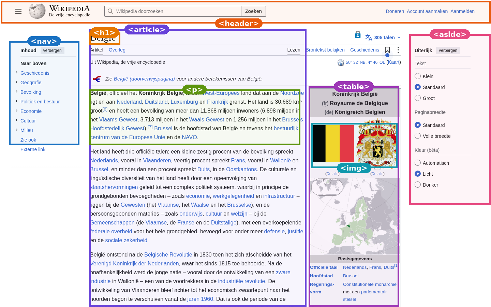
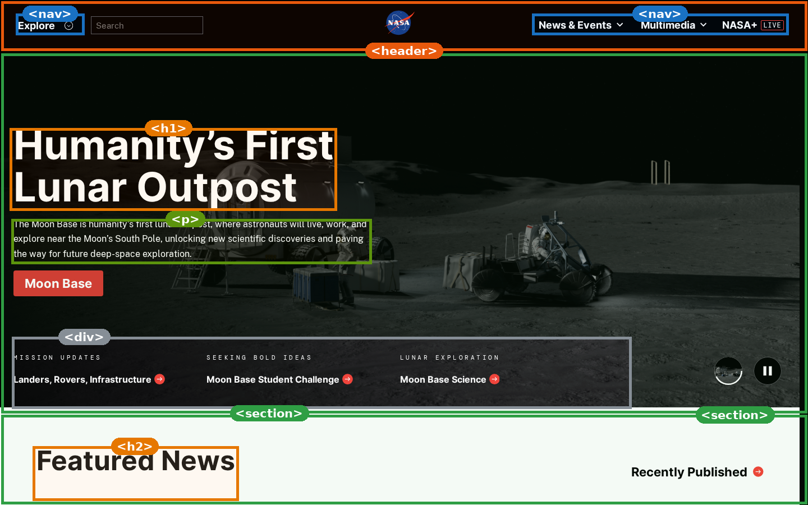
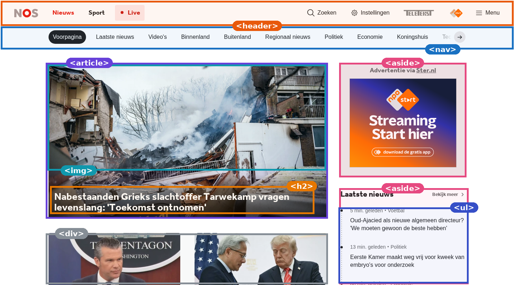
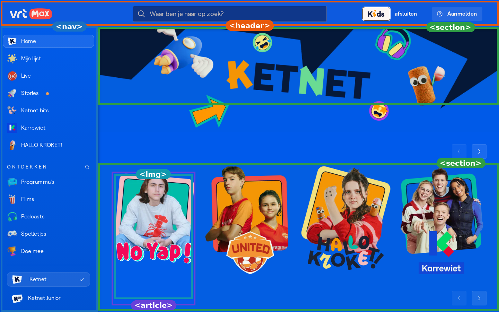

Stap 0 · Theorie — start hier
Spiekbriefje: welk element kies ik?
Elke webpagina is opgebouwd uit een handvol vaste bouwblokken.
Ken deze 12 elementen: de 11 kern-elementen
(<header>, <nav>, <section>, <article>,
<div>, <aside>, <h1>…<h6>, <p>,
<img>, <ul>, <table>) plus <footer>.
De kleur bij elk element is de vaste kleurcode die je ook in de oefeningen en in je opdracht gebruikt.
🌟 Gouden regel: kies het element dat het best vertelt WAT het blok is — niet hoe het eruitziet.
Zo zit een typische pagina in elkaar
<body>
<header> logo · zoekbalk · menu </header>
<nav> <ul> <li>links …</li> </ul> </nav>
<section>
<h1> Paginatitel </h1>
<p> inleiding … </p>
<article> nieuwskaart … </article>
</section>
<aside> zijkolom … </aside>
<footer> © · contact · privacy </footer>
</body>Zo gebruik je dit spiekbriefje
- Kijk naar wat een blok is (zijn betekenis), niet naar hoe het eruitziet of waar het staat.
- De kleur van een element is overal dezelfde: in deze kaartjes, in het palet van oefening 1 en in je eigen annotaties.
- Twijfel je? Kies het specifiekere element: liever
<article>dan<div>, liever<nav>rond een lijst links dan een losse<ul>. - Kom je er tijdens de oefeningen niet uit? Scroll terug naar dit spiekbriefje bovenaan.
De 12 bouwelementen op een rij
Kleur = vaste kleurcode · “VB” = waar je het ziet in de nep-site van oefening 1.
Als het blok is … denk dan aan …
| Als het blok is … | … denk aan |
|---|---|
| Het hele blok bovenaan met logo + zoekbalk + menu | <header> |
| Een rij of kolom met enkel links om ergens heen te gaan | <nav> (vaak rond een <ul>) |
| Een groot, duidelijk afgebakend blok met tussentitel (“Laatste nieuws”, “Uitslagen”) | <section> |
| Een stuk dat op zichzelf zou kunnen bestaan (bericht, blogpost, product, review) | <article> |
| Iets naast de kern: advertentie, gerelateerde links, nieuwsbrief | <aside> |
| Een blokje zonder eigen betekenis, enkel om mee te lay-outen of te stijlen | <div> |
| De allergrootste titel van de pagina | <h1> — en maar één keer |
| Tussentitels onder de hoofdtitel | <h2> → <h3> → <h4> (niveaus niet overslaan) |
| Een gewone alinea tekst | <p> |
| Een foto, logo of icoon | <img alt="beschrijving"> |
| Opsomming zonder volgorde (menu, kenmerken, lijstjes) | <ul> + <li> |
| Opsomming mét volgorde (stappen, ranking) | <ol> + <li> |
| Rijen × kolommen met verband (uitslagen, rooster, infobox) | <table> + <tr> <th> <td> |
| Helemaal onderaan: ©, contact, privacy, kleine links | <footer> |
De oefeningen in het kort
Van spiekbriefje naar oefening
Bovenaan (stap 0) staat het spiekbriefje met de kleine theorie over de 12 bouwelementen. Daarna maak je vijf interactieve oefeningen: je annoteert een nep-site, koppelt beschrijvingen aan elementen, beantwoordt meerkeuze- en waar/niet-waar-vragen en verbouwt een stuk div-soep. Zo kun je later zelf een template omzetten naar steekhoudende HTML.
Neem een screenshot van een schoolproof website (volledig scherm).
Teken kaders rond de structuren in Photoshop of Figma.
Geef elk kader een label met de elementnaam.
Gebruik de vaste kleuren (zie het palet bij oefening 1) + legende.
Bestandsnaam
Naam_Voornaam_Website.png + reflectie.Oefening 1
Annoteer pixelpunt.school
💡 Klik op een kader (gestippelde rand) in de website en kies daarna het element in het palet. Geneste kaders? Het binnenste kader wint.
- Sportdag verslag
- Nieuw rooster
- Ouderavond
- Bibliotheek update
| Dag | 1e les | 2e les |
|---|---|---|
| Ma | Wiskunde | Informatica |
| Wo | Nederlands | Webdesign |
Oefening 2
Koppel & kleur: beschrijving → element
💡 Klik eerst op een beschrijving links en daarna op het element dat erbij hoort. Juiste koppels klikken vast; bij een fout schudden beide even.
Oefening 3
Meerkeuze: kies het beste element
💡 Kies per vraag één antwoord en druk daarna op Controleer. Je krijgt bij elke vraag een korte uitleg.
Oefening 4
Waar of niet waar?
💡 Beoordeel elke bewering meteen. Na je keuze zie je het juiste antwoord en een uitleg; de bewering valt daarna vast.
Oefening 5
Div-soep verbouwen
💡 Deze code is pure “div-soep”: alles is een <div>. Kies per regel het semantisch beste element en controleer daarna.
Uit het cursusdossier
Zo zien echte screenshots eruit
Screenshots genomen op 10 november 2026 (desktop, 1440 × 900) — schoolproof en didactisch gebruikt.




Opdracht
Mijn website-structurenmap (/20)
Nu jij: kies een schoolproof website, maak een screenshot en annoteer de structuren zoals in oefening 1.
Eisen
- Kies een schoolproof website uit de lijst hiernaast (of vraag het aan de leerkracht).
- Maak een screenshot van de homepagina (volledig scherm, desktop).
- Teken minstens 10 kaders rond structuren en label elk met het juiste element.
- Gebruik minstens 8 kern-elementen en teken minstens 1 genest kader (kader in een kader).
- Gebruik de vaste kleurcode en voeg een legende toe.
- Zet je naam, de URL en de datum op de afbeelding.
- Schrijf een reflectie van 8–10 regels: welk element was moeilijk? Waarom kies je
<article>en niet<div>?
Schoolproof websites
Inleveren
Naam_Voornaam_Website.png (of .pdf)Via het schoolplatform · deadline: zie Smartschool
Geen ongepaste inhoud (volwassen content, gokken of alcohol) — controleer eerst!
Rubriek (/20)
| Criterium | Punten | Wat er verwacht wordt |
|---|---|---|
| Volledigheid | / 6 | Minstens 10 kaders, alle belangrijke zones van de pagina, minstens 1 genest kader. |
| Juistheid labels | / 5 | Elk kader heeft het semantisch beste element (niet het “makkelijke” <div>). |
| Netheid | / 3 | Kaders lopen netjes rond het blok, geen overlap, leesbare labels, vaste kleurcode. |
| Reflectie | / 4 | 8–10 regels, eigen woorden, minstens één “waarom”-vraag beantwoord. |
| Inlevering | / 2 | Juiste bestandsnaam, legende, naam + URL + datum op de afbeelding, op tijd. |
| Totaal | / 20 | Vanaf 10/20 ben je geslaagd. |